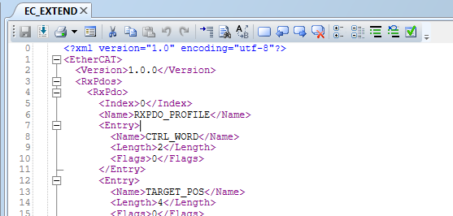
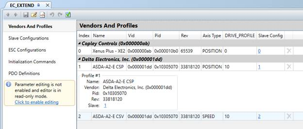
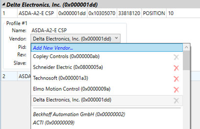
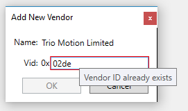
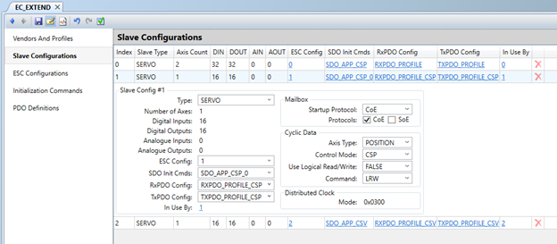
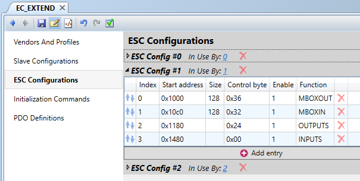
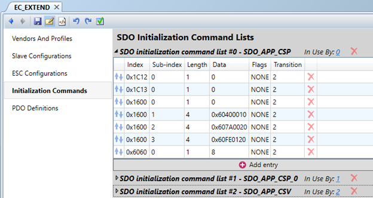
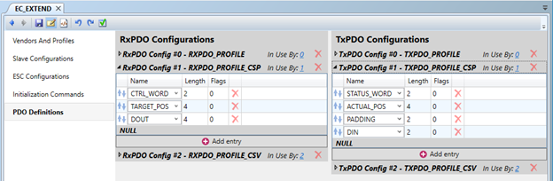
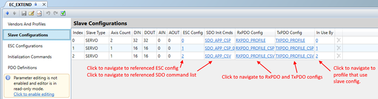
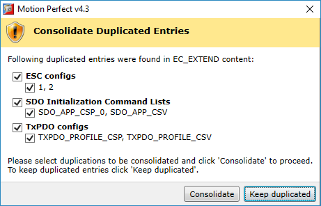

The EC_EXTEND file is an XML format text file containing configuration data for one or more EtherCAT slave devices. The file can be loaded onto a Motion Coordinator so that it is able to interact with the EtherCAT devices whose configuration data in contained in the file. The contents of the file is used to extend the Motion Coordinator’s in-build dictionary of EtherCAT devices.
The XML format has tags to delineate the various objects that require description.
The Tags’ hierarchy is as shown below:
<EtherCAT>
<group_tag>
<block_tag>
<Entry_tag>
<Attribute_tag>Value</Attribute_tag>
…
</Entry_tag>
…
</block_tag>
…
</group_tag>
…
</EtherCAT>
Each group may contain one or more blocks. Usually indicated by use of an <Index></Index> tag.
Each block may contain multiple entries and each entry consists of one or more attributes with value.
When parsing an EC_EXTEND file it is most likely done from the END of the file first, as this contains the top-level information about the slaves.
EC_EXTEND is essentially a TEXT file for the Motion Coordinator and is possible to do line by line text editing for minor modifications like changes to attribute value. From Motion Perfect v4.3 XML format is recognised in text editor and operations like code collapsing and text highlighting are available.

The available editing functions are as follows:
 Save to disk
Save to disk
 Print
Print
Switch to guided editor
 Cut selected text to
clipboard
Cut selected text to
clipboard
 Copy selected text to
clipboard
Copy selected text to
clipboard
 Paste text from clipboard
Paste text from clipboard
 Undo last operation
Undo last operation
 Redo last undone operation
Redo last undone operation
 Find text
Find text
 Replace text
Replace text
Toggle bookmark on current line
 Go to previous bookmark
Go to previous bookmark
 Go to next bookmark
Go to next bookmark
Clear all bookmarks
 Collapse all collapsible
sections
Collapse all collapsible
sections
 Expand all previously
collapsed sections
Expand all previously
collapsed sections
 Comment out selected lines
Comment out selected lines
Un-comment selected lines
Validate the contents
Right clicking anywhere in the editor working area will display a context menu containing the following entries:
|
Entry |
Description |
|
|
Cut |
Cut the currently selected text to the clipboard. |
|
|
Copy |
Copy the currently selected text to the clipboard. |
|
|
Paste |
Paste text from the clipboard at the current position. |
|
|
Find |
Find text in this program |
|
|
Find in Project |
Find text in all suitable programs in this project |
|
|
Replace |
Replace text in this program |
|
|
Delete Line |
Delete the current line. |
|
|
Code Collapsing |
Collapse All |
Collapse all collapsible sections |
|
Expand All |
Expand all previously collapsed sections |
|
|
Toggle Bookmark |
Toggle a bookmark on the current line. |
|
Guided editor is designed to provide assisted visualization and editing of EC_EXTEND file contents.
In the left panel of the editor window the list of groups is displayed and individual group can be selected.
In the right panel the list of blocks of a selected group is displayed and individual block can be selected.
By clicking with mouse and selecting a block it is expanded to visualize its contents in deeper details.
Initially the editor is in read-only mode to prevent accidental modification of the contents.
To enable editing either click on the link in the warning notice or by Enable Editing button on the tool-bar.
The available editing functions are as follows:
Navigate editor backward to entry that was displayed before
Navigate editor forward – reverse the last navigate backward operation
 Save to disk
Save to disk
 Cut selected text to
clipboard
Cut selected text to
clipboard
 Copy selected text to
clipboard
Copy selected text to
clipboard
 Paste text from clipboard
Paste text from clipboard
 Undo last operation
Undo last operation
 Redo last undone operation
Redo last undone operation
Validate the contents
Right clicking on any entry in guided editor it will display a context menu containing the following entries:
|
Entry |
Description |
|
Remove entry… |
Remove the selected entry |
|
Show in XML editor |
Switch to text editor and visualize the XML form of the selected entry |
The EC_EXTEND file contains following groups:
For each group the editor presents the contained information in structured form.
EC_EXTEND file contains information about one or more profiles for given product. Profiles are grouped by vendor and ordered by product.

For each profile following information is displayed:
When in editing mode all fields are subject to modification. Vendor and slave configuration are selected from their corresponding lists.

Vendor list starts with a special entry for adding a new vendor followed by the list of custom vendors from EC_EXTEND file and ending with the list of known vendors from the controller.
When adding a new vendor a dialog box is displayed asking for vendor name and ID.

The newly entered vendor Id is checked against the list of already defined ones.
Slave configuration is assigned to each profile. Profile references the slave configuration by its index. Although it is not common one slave configuration can be assigned to multiple profiles.
Slave configurations are visualized in a table and by selecting an entry in the list it is expanded and more detailed information about selected slave configuration is displayed inline.

Slave configuration describes aspects of the profile like:
While selection of majority of configuration options is aided by presenting a list of possible values it also possible to set a custom value by directly editing the field.
Selected ESC, SDO, RxPDO and TxPDO configurations are just references to a block in corresponding group in EC_EXTEND file. ESC configuration is referenced by its index while SDO and PDO configurations are referenced by their name.
While in editing mode it is possible to remove a slave configuration using button.
ESC configurations are referenced by one or more slave configurations.

Each ESC configuration represents a list of entries each specifying following data:
While in editing mode it is possible to remove whole configurations as well as individual entries using button.
It is also possible to add a new entry by pressing ‘ Add entry’ button below the list.
Individual entries within a configuration block can be reordered by pressing area and dragging the entry.
SDO initialization command lists are referenced by one or more slave configurations.

Each SDO initialization command list represents a set of entries each specifying following data:
While in editing mode it is possible to remove whole lists as well as individual entries using button.
It is also possible to add a new entry by pressing ‘ Add entry’ button below the list.
Individual entries within a configuration block can be reordered by pressing area and dragging the entry.
PDO configurations are referenced by one or more slave configurations. Each slave configuration refers to one RxPDO configuration and one TxPDO configuration.
Both RxPDO and TxPDO configurations are presented in guided editor side by side in the same panel.

Each PDO configuration represents a list of entries each specifying following data:
The list is terminated by NULL entry.
While in editing mode it is possible to remove whole configurations as well as individual entries using button.
It is also possible to add a new entry by pressing ‘ Add entry’ button below the list.
Individual entries within a configuration block can be reordered by pressing area and dragging the entry.
Useful feature of guided editor is ability to navigate between different types of blocks by clicking on their references.

By using and buttons on toolbar it is possible easily go back and forth between visited blocks of entries.
In case guided editor does not provide required editing functionality it possible to switch to text editor and automatically scroll and place the cursor over the currently selected block or entry.
It is possible to merge the contents of another EC_EXTEND file into currently edited one. During the merge process all blocks are copied to their respective groups. Indices are adjusted so that no duplications exist. For entries that are referenced by name it is ensured that the names are unique by appending number as a suffix. At the end of merge operation the new combined contents is checked for duplicated entries and in case duplicated blocks are found the user is presented UI to consolidate duplicated entries.
Guided editor provides functionality to detect and consolidate duplicated entries.
Duplicated entries that are candidate for consolidation are listed by groups and the user is given option to select with which ones to process.

After the processing completes there remains only the first entry for each consolidation group.
Another useful feature is validation of EC_EXTEND contents. There are two type of validation performed: